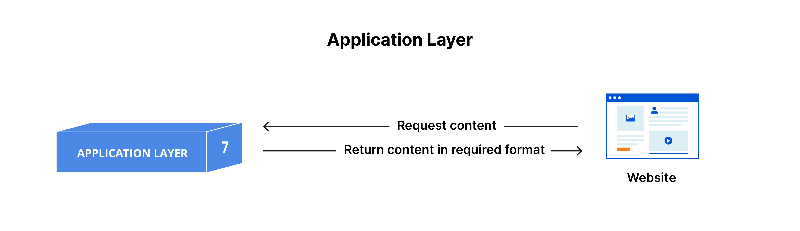

Layers of the OSI Model
1. Physical Layer
The physical layer is the lowest layer of the OSI model and deals with the physical transmission of data over a communication channel. It is responsible for transmitting raw data bits from one device to another.
Functions of the physical layer include encoding, modulation, and transmission of data signals. It ensures that data is transmitted reliably across the network medium, including cables, connectors, and network interfaces.
2. Data Link Layer
The data link layer is responsible for node-to-node communication within the same network segment. It ensures data integrity and error detection by dividing data into frames and adding necessary control information.
Functions of the data link layer include framing, error detection, and media access control. It establishes and terminates connections between devices and manages data transmission over the physical layer.
3. Network Layer
The network layer is responsible for logical addressing, routing, and path determination. It determines the best path for data packets to reach their destination across multiple networks.
Functions of the network layer include addressing, routing, and packet forwarding. It abstracts the underlying network topology and provides a universal addressing scheme for devices.
4. Transport Layer
The transport layer is responsible for end-to-end communication between devices. It ensures reliable and efficient data transfer by handling segmentation, flow control, and error recovery.
Functions of the transport layer include segmenting data, establishing connections, and ensuring data integrity. It provides mechanisms for error detection, retransmission, and congestion control.

5. Session Layer
The session layer establishes, maintains, and terminates communication sessions between devices. It manages dialogues and ensures synchronization between applications.
Functions of the session layer include session establishment, data exchange, and session termination. It provides mechanisms for session management, checkpointing, and recovery.
6. Presentation Layer
The presentation layer is responsible for data representation, encryption, and compression. It translates data formats and ensures that data is presented in a readable and understandable format.
Functions of the presentation layer include data translation, encryption, and compression. It provides a standardized format for data exchange and ensures compatibility between different systems.
7. Application Layer
The application layer is the topmost layer of the OSI model and interacts directly with end-users and applications. It provides services such as email, file transfer, and remote access.
Functions of the application layer include providing user interfaces, managing communication sessions, and facilitating application interactions. It enables users to access network resources and services.
